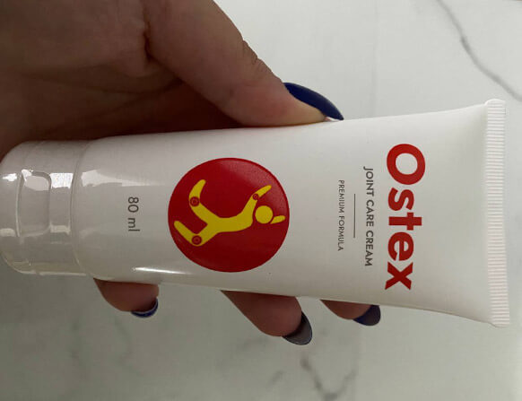
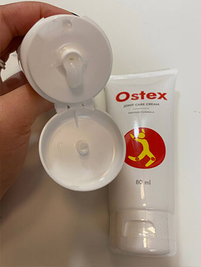
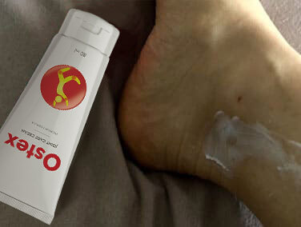
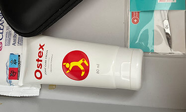
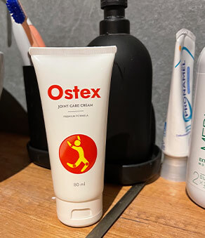
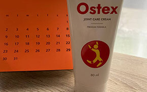
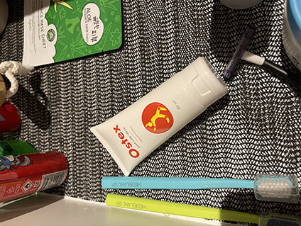
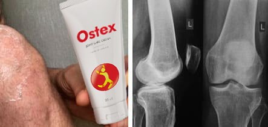
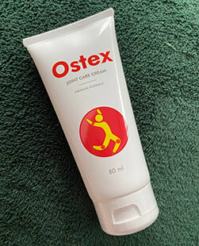

Jak pozbyć się bólu pleców będącego efektem siedzącego trybu życia? Rada księgowej z 25-letnim doświadczeniem
ekspert ds. finansowych, blogerka
1 209 wyświetleń 373
Cześć wszystkim!
Kiedy byłam mała, moja mama mawiała:
„Dobrze się ucz, Marysiu, albo czeka cię to, co i mnie – całe życie będą boleć Cię plecy”.
Wcześniej zarabiała przy zbiorze warzyw, ciężko pracując na farmie.
Ale praca biurowa nie jest wcale łatwiejsza niż ta w polu z motyką. Młode osoby mogą bez przeszkód spędzać 8-12 godzin przed komputerem. Niestety stopniowo godziny zmieniają się w dni, dni w tygodnie, miesiące i lata... A teraz, kiedy zbliżam się do 40, szyja mi drętwieje od siedzącej pracy i odczuwam chroniczny ból w dole pleców.
Wcześniej brałam leki przeciwbólowe i stosowałam diklofenak na obolałe miejsca, a potem szłam do pracy. W końcu jednak tabletki i maści przestały działać.
Poszłam do kliniki – lekarz postawił diagnozę: „fibromialgia”, znalazł przepuklinę, kilka zgrubień i wysłał mnie na terapeutyczny masaż: 3-4 kuracje po 10-15 sesji rocznie. To było kosztowne nawet przy mojej pensji. Przeszłam 2 kuracje, a potem skończyły mi się oszczędności.
Poprosiłam syna, żeby pomógł mi w kwestiach finansowych. Ale powiedział: „Mamo, przestań się wygłupiać! Tu masz krem rozgrzewający – poczujesz się, jak nowo narodzona już za dwa tygodnie!” – i dał mi małą tubkę.
Syn twierdził, że ból pleców przeszedł mu po miesiącu stosowania tego kremu. Jest programistą – też ma problemy z bólem pleców i stawów. A teraz jeszcze ciągle nosi mojego wnuka na rękach.
Po powrocie do domu, przeczytałam ulotkę. Musiałam jedynie smarować kremem obolałe miejsca rano i wieczorem, pozostawiając go do całkowitego wchłonięcia. Po wcześniejszym nałożeniu kremu można było wykonywać proste ćwiczenia.
krem nakłada się na skórę delikatnym ruchem masażowym. Szybko się wchłania i nie pozostawia śladów na ubraniach ani na pościeli.
Według ulotki efekt gojenia wywołuje zbilansowany i starannie dobrany skład. Główne składniki czynne kremu mentol, ekstrakt z arniki i amon. Formuła ma działanie rozgrzewające, przeciwzapalne, przeciwbólowe i regenerujące. Przy regularnym stosowaniu kremu zachodzi naturalna regeneracja uszkodzonych tkanek i zmniejsza się ryzyko powstania urazu, również podczas ćwiczeń. Mentol zawarty w kremu wywołuje przyjemny efekt rozgrzewający, poprawia krążenie krwi, mobilność oraz unerwienie tkanek. Skuteczność kremu jest nieporównywalna do żadnego efektu działania znanych środków farmaceutycznych, które zawierają syntetyczne substancje. To produkt w 100% ekologiczny i nie ma przeciwwskazań do jego stosowania ani nie wywołuje efektów ubocznych.
Mój problem pojawia się w konkretnych miejscach – mam nawracający ból szyi i dolnego odcinka kręgosłupa. Dlatego smaruję te obszary kremem co wieczór lub podczas zaostrzenia objawów. Natychmiast zauważyłam efekt. Po pierwszym użyciu przyjemne ciepło rozlało się po moim ciele, a ból zniknął w ciągu kilku minut. Odczucia po zastosowaniu: Jest tak, jakbym nie siedziała w biurze przy komputerze, tylko leżała na miękkim, puchowym łóżku przez cały dzień. Mam uczucie takiej lekkości w całym ciele! To zdecydowanie lepsze niż bolesny i drogi masaż albo maści z apteki, od których piecze skóra!
Następnego wieczoru zaczęła mnie boleć szyja w samym środku dnia pracy. Wiedząc, że tak może się stać, zabrałam ze sobą do biura tubkę kremu w torebce. Posmarowałam nim szyję, a 5 minut później zapomniałam o nieprzyjemnych doznaniach. Dzięki takiemu miejscowemu działaniu mogę cały dzień i całą noc wytrzymać bez środków przeciwbólowych. Ból nie przeszkadza mi w nocy, a wcześniej nie mogłam spać bez specjalnej poduszki pod dolnym odcinkiem pleców.
Tydzień później szyja i plecy zupełnie przestały mnie boleć. Po raz pierwszy od pięciu lat! Byłam bardzo szczęśliwa i zadzwoniłam do syna, żeby mu podziękować. Poradził mi, żebym zawsze miałam tubkę kremu pod ręką, bo nigdy nie wiadomo. Tak czy siak, pomaga przy urazach i skręceniach. A ogólnie rzecz biorąc, osoby, które pracują na siedząco przez długi czas, powinny zawsze mieć przy sobie ten krem.
Ja zamówiłam go tutaj . Nazywa się . Cena przy 50% zniżce jest bardzo fajna – mniej więcej tyle samo co 1 sesja masażu u chiropraktyka. A biorąc pod uwagę, że krem ma uniwersalne zastosowanie i wywołuje skumulowany efekt, korzyści z jego stosowania są oczywiste.
Teraz mam świetny środek na ból pleców i mięśni w domu. Co noc przed snem smaruję dolną część pleców i szyję kremem, a kilka minut później czuję przyjemne, lekkie ciepełko. Mój kręgosłup jest szczęśliwy, mięśnie szyi zrelaksowane i już mnie nie boli, nawet jak w biurze zostaję dłużej.
A ostatnio moja najmłodsza córka nadwyrężyła sobie kolano podczas treningu. Dałam jej ten krem i powiedziałam, jak go stosować. Dwa dni później już zapomniała o kontuzji, jednak starała się jeszcze nie obciążać nogi za mocno. Okazuje się, że ten krem stosują nawet profesjonalni sportowcy podczas treningów, do rozgrzewania mięśni, by zmniejszyć ryzyko urazu albo wyzdrowieć, jeśli dojdzie do kontuzji.
A zatem, jeśli was też bolą plecy albo szyja po pracy, polecam . Doskonale odpręża mięśnie i kręgosłup, sprawia, że znika ból oraz wywołuje efekt rozgrzewający, który przyczynia się do poprawy krążenia krwi i mobilności. Oznacza to, że starożytne metody miejscowego rozgrzewania naprawdę działają! Daję temu wspaniałemu kremowi 5 na 5 gwiazdek.
A tak na marginesie oferta specjalna na nadal obowiązuje. Więcej lepiej się pospiesz – lepiej być zdrowym niż bogatym!
No i tradycyjnie, jak to na blogu – daj lajka, udostępnij i zasubskrybuj mój kanał. Życzę zdrowia!
Super! Tego mi trzeba po pracy!
0 Odpowiedz | PolubSuper krem ! Świetna opcja, gdy potrzeba czegoś rozgrzewającego na wieczór. Ja pracuję w magazynie i to mocno obciąża mój kręgosłup. dlatego przed pójściem spać, zawsze smaruję tym kremem dolną część pleców. 10 minut – i plecy mam, jak nowe!
 12 Odpowiedz | PolubKupiłam ten krem pół roku temu i nie żałuję! Używam też na kolana i biodra – bo bardzo pomaga mi na ból stawów.
9 Odpowiedz | PolubSłyszałam, że tego kremu można używać przed treningami, ale nie wiedziałam, czy go kupić. Dzięki za link do promocji!
0 Odpowiedz | PolubOd dłuższego czasu tego szukałem :)
0 Odpowiedz | PolubUwielbiam grać w siatkówkę, ale potem zawsze przez kilka dni boli mnie nadgarstek. Problem rozwiązał się bardzo szybko, gdy zastosowałam ten krem !
 18 Odpowiedz | PolubZastanawiam się, czy nie rozgrzewa za mocno, czy nie parzy?
0 Odpowiedz | PolubNie, w przeciwieństwie do środków farmaceutycznych, które strasznie pieką i powodują oparzenia, wywołuje delikatne i przyjemne uczucie ciepła, które łagodzi ból i stany zapalne. Jeśli chodzi o intensywność, można ją porównać do ciepłego kompresu, który mama kładła mi na gardło, kiedy mnie bolało, jak byłam dzieckiem.
5 Odpowiedz | PolubWcześniej myślałam, że to oszustwo. Ale kiedy mój ojciec wyleczył swoją rwę kulszową w ciągu 2 tygodni, to uwierzyłam. Zaczęłam używać tego kremu przed treningami i po intensywnym wysiłku fizycznym.
 32 Odpowiedz | PolubChyba powinnam to kupić. Naprawdę siedzimy za dużo. Nasze mięśnie nie są przystosowane do takiego stylu życia.
3 Odpowiedz | Polub